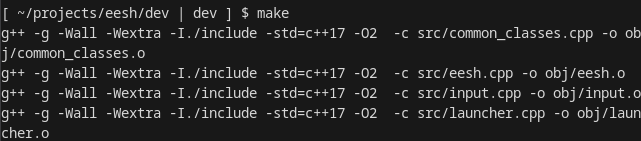
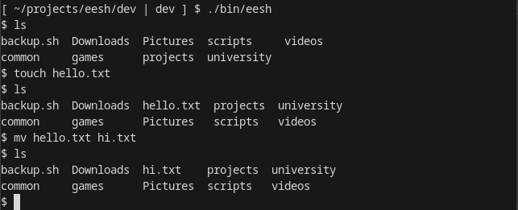

Easily Extendible Shell (eesh) is my first foray into systems level programming. It is written in C++, and supports command execution, shell redirection, and variable substitution. It is made for UNIX - like systems, but is most suited (and most tested) on Linux.
As with all projects, there is still many things to do. Here is a small (but substantial) list of things yet to do: